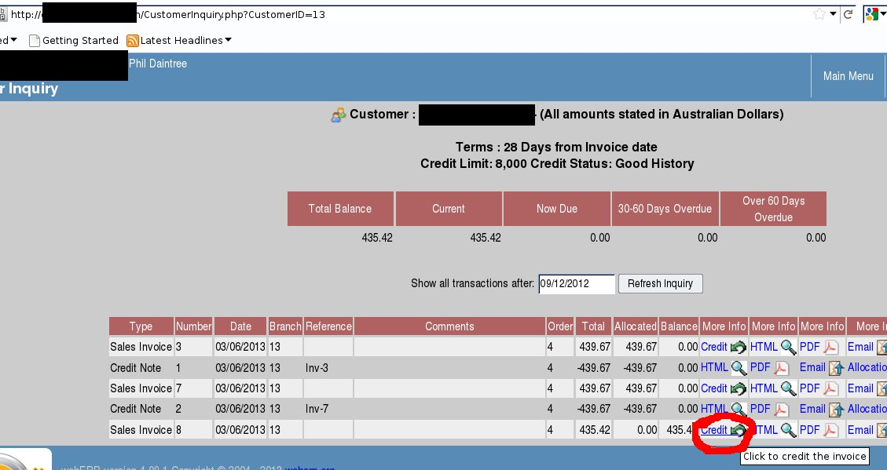
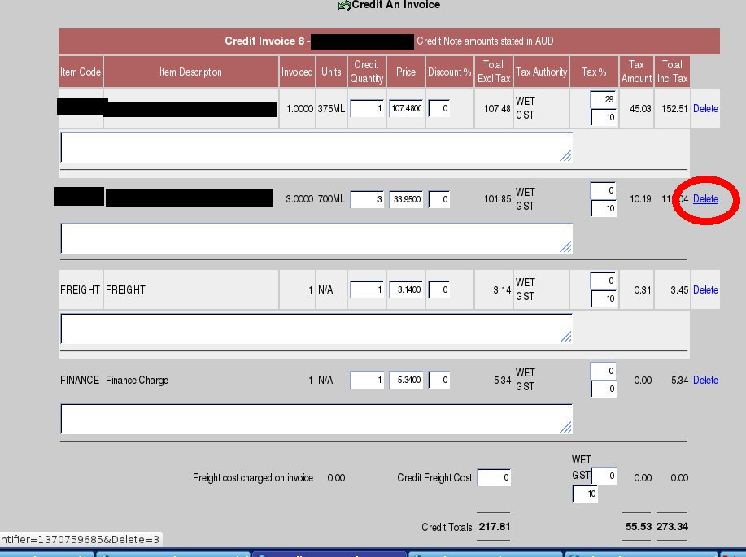
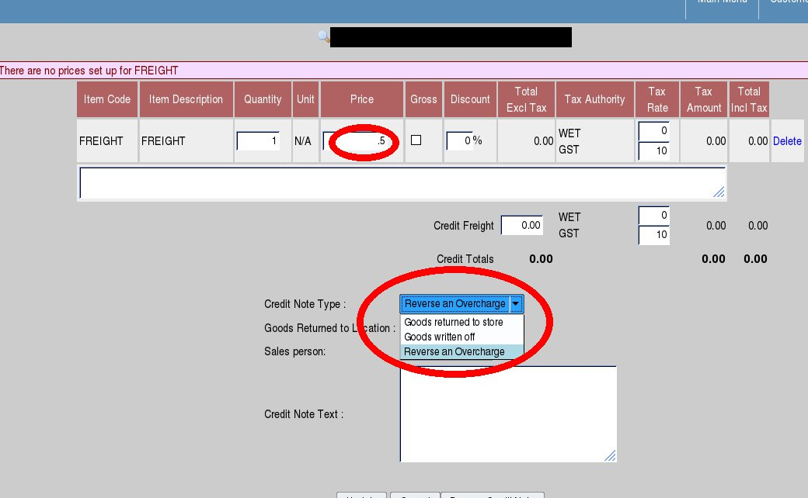
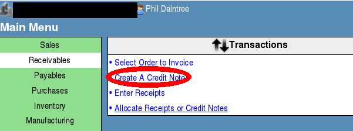
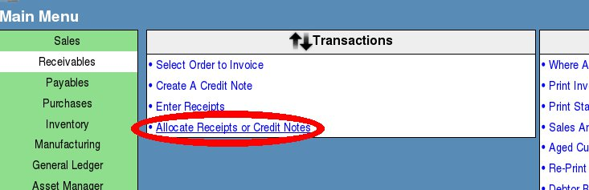
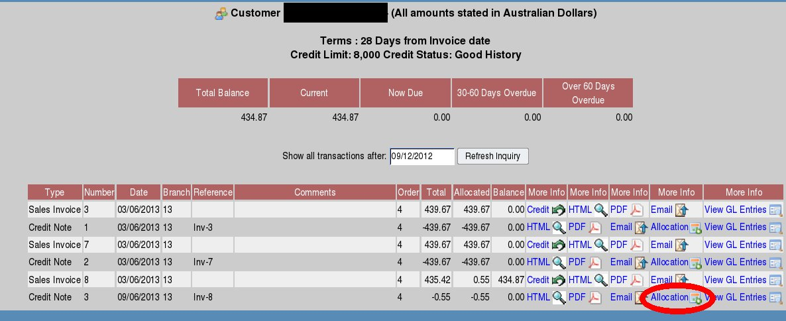

Credit notes are used to either reverse an invoice or to credit damages, warranty, promotional goods to a customer's account
There are 2 Methods:
From a customer inquiry select the invoice you wish to credit and click on the "credit invoice" icon (more usually used for undo in word/excel etc)

Now delete the lines you DON'T want to credit.....

Now change the prices/quantities to the values you wish to credit....
Now select the type of credit note. A credit note write off is used if you wish to write off the cost of some products which are not returned into stock. This then allows you to select a general ledger account after you click on update - say for breakages or a promo giveaway prize. The general ledger selection will only show once you clicked update selecting the "Goods Written Off" option. If you wish to reverse an overcharge, then this has no impact on the cost of sales in relation to the stock returned - no stock movement is created for a return of goods but the actual charge to sales is reduced by the amount of the credit note. A normal credit note is where the goods are "Returned to Stock".

The advantage of option 1 above is that the allocation to the invoice is done automatically and items come up at the prices/discounts given on the invoice if you have a long invoice to credit then this is a huge time-saver.
1). Create the credit note manually from the main menu.

Now select the customer, then you can then either enter the item code and quantity directly in the quick entry form or search for the item using the search parts facility.
Enter the value/quantity - and select the credit note type as per option 1 above.
Can click update to recalculate the value but not necessary really as this happens automatically on processing the credit note
If you used option 2 to create the credit note then you need to now allocate the credit note to invoices again there are 2 methods

This shows all receipts or credit notes that are outstanding to be allocated against invoices. Select the credit note, the system then shows all the outstanding invocies against the customer account and you choose which invoices to allocate it to.
From the customer inquiry you can look at the transactions and click on the allocate link against any of the credits (or receipts) any existing allocation will show and these can be modified at any time

In this example - because the credit note was created from the credit invoice link - the allocation has already been done (see the balance of the transaction is 0), but if it weren't you would just select allocation link and choose which invoices to allocate to.